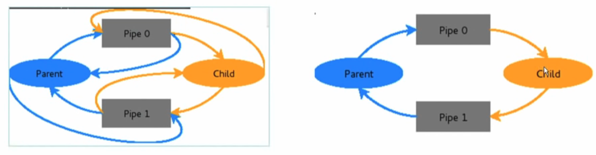
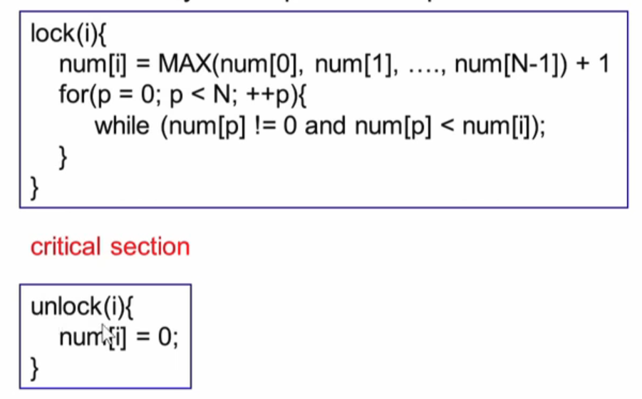
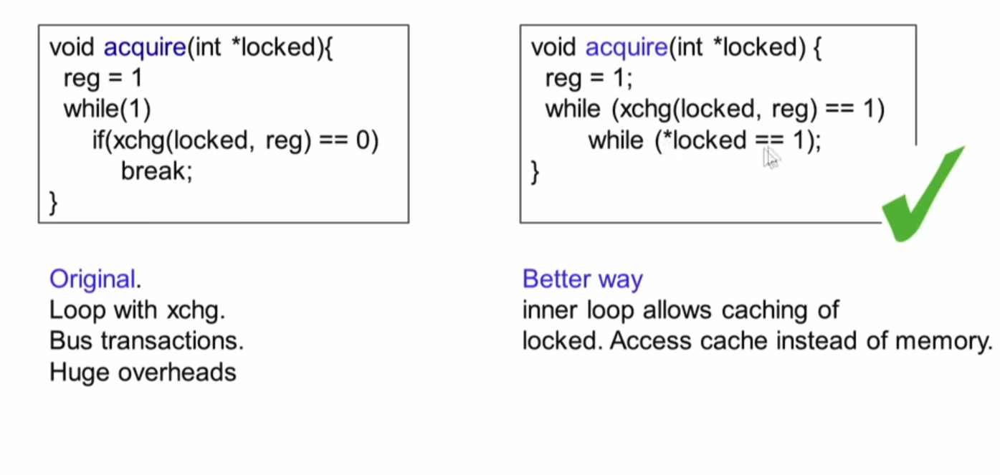

During execution, a process can only view its VA. It cannot view another processes VA or determine the physical mapping. Then how does one process communicate with another? Inter process Communication. There are 3 ways:
One process will create an area in RAM which other processes can access. Both processes can access shared memory like a regular working memory ⇒ R/W is like regular R/W and it is Fast. However it is error prone and needs synchronization between processes.
int shmget creates a shared memory segment and returns the ID of the segment
int shmat attaches shmid shared memory to address space of calling process
Another common application of message passing is the use of Pipes.
It is always between parent and child and also unidirectional
In order to obtain two way communication using pipes, two pipes need to be opened 
Note that Parent can read from Pipe 0 and Pipe 1. However we only need one read operation. The diagram on the right shows the unnecessary pipes that were removed
Signals
Signals are asynchronous unidirectional communication between processes. Signals are usually small integers with each integer having predefined meaning (for eg. 9 = kill).
kill(pid, signum) ⇒ In order to kill the signal the process defines a signal handler sighandler_t signal(signum, handler);
Suppose you are executing two programs accessing a shared variable counter=5. One increments the variable whereas the other decrements. Thus the counter could take the values 4,5,6. This is an issue with shared memory and the results could be different based on when the context switch occurs.
Race Conditions: A situation where several processes access and manipulate the same data and the outcome depends on the order in which the access take place ⇒ Prevent race conditions by synchronization and ensure only one process at a time manipulates critical data (section).
Any solution should satisfy the following requirements:
Mutual Exclusion: Only one process can access critical section any given time
Progress: When no process is in the critical section, any process that requests entry into critical section must be permitted without any delay.
No Starvation: There is an upper bound on the number of times a process enters the critical section while another is waiting
All solutions typically use locking and unlocking. The use of lock and unlock constructs in the program ensures that the critical sections are made atomic.
The simplest solution is to disable interrupts before entering a critical section. This way context switches can not happen. However this requires higher privilege and is not suited for multicore systems
We can also use a shared variable to lock and unlock a critical section as the figure below. Only when the other process is not using the critical section is when the current process can access its critical section. This ensures mutual exclusion.
However, there is busy waiting and there’s a waste of power and time.
It forces one to alternate execution of critical section between the two processes as only process 2 can set turn=1 ⇒ Fails Progress
Attempt 2
The issue with the previous attempt was the common turn flag that was modified by both processes. This forced processes to alternate. However we could have two flags, one for each process
By using two flags, we need not alternate execution in critical section. However it does not guarantee mutual exclusion.
Suppose both flags are false and the context switch occurs after the while statement in process 1. Since p1_inside is false, process 2 can now enter critical section. If again a context switch occurs then process 1 resumes by setting p1_inside=True. This way critical section is not protected.
Attempt 3
The issue with the previous attempt is that the flags were set after we break from the while loop. What if we change the ordering?
Whilst this achieves mutual exclusion, it does not achieve progress. In fact it could deadlock.
Suppose a context switch occurs after p1_wants_to_enter=True. Then in process 2 p2_wants_to_enter = True. If a context switch occurs here then then process 1 will be stuck in its while loop. If a context switch happens again then process 2 will also be stuck in its while loop. This causes neither of the processes to progress and get stuck in a deadlock.
Petersons Solution
The problem with the previous attempt is that there was no way to come out of the deadlock i.e. one of the processes breaks out of the while loop.
Favoured is used to break the tie when both p1 and p2 want to enter the critical section. This works because favoured can only take 2 values.
Suppose a context switch occurs after setting both flags to true and now we are back in process 1. Now favoured gets set to 2 and therefore it won’t be able to breakout of the while loop. Once the time slice ends and a context switch occurs, favoured gets set 1 (in p2) and then process 2 also can’t break out of its while loop. Now back to process 1, since favoured is now 1, it breaks out of its while loop and process 1 enters the critical section and sets the flag as false. Since it is unlocked process 2 can now also enter the critical section.
The Petersons solution works well for 2 processes. However we need one that supports a larger number of processes.
Simplified Bakery Algorithm
Processes number 0 to N-1, num (global) is an array of N integers initialized to 0. Each entry corresponds to a process. 
When a process invokes lock(i) its corresponding num value is set to the maximum num value +1.
Then the for loop scans through all processes
A process can only enter the critical section if it has the lowest NON-ZERO num value among all processes.
Note that for this algorithm to work, the assignment of max value has to be atomic to ensure that no two processes get the same value ⇒ ensures mutual exclusion
Original Bakery Algorithm
This algorithm does not require atomicity by introducing an array of N booleans choosing set to False.
Choosing ensures that a process is not choosing a value for num. Therefore no 2 process can enter a critical section.
The second condition in while ensures that if there are 2 processes with the same num value, the process with the smaller num value is chosen.
§8.5: Hardware Locks
In practice software solutions are not efficient. Hence hardware solutions are used. The problem with software attempts usually was we needed to make multiple instructions atomic. Modern architectures allow making multiple instructions atomic.
Consider a hardware implementation of the above test_and_set function which is atmoic. If two CPUs execute the function at the same time the hardware ensures that one processor completes the entire function before the other one starts.
We can now use this to lock and unlock critical sections in our code. Suppose P2 is run first. Then test_and_set function inside the while would return 0 and break out of the while loop. However note that the lock variable is now set to 1 (inside the ts function).
Now, if P1 tries to enter the critical section, the test_and_set would return 1 and therefore it won’t be able to break out of the while loop. Only once P2 completes executing its critical section, the lock variable is set to 0 and the test_and_set inside P1 would return 0 and break out of its while loop. Thus, this ensures mutual exclusion.
Intel platforms have a similar implementation called xchg which takes 2 arguments. Instead of setting *L = 1, it sets *L to the value supplied to the function.
This xchg function is used to build higher level constructs
Spinlock
In a spinlock, one process will acquire the lock whereas the other will wait in a loop repeatedly checking if the lock is available. The lock becomes available when the former process releases it.
xchg %eax, X
; Exchanges data between register eax and memory location X
It should be ensured that no compiler optimizations are allowed on X i.e. should not make X a register variable ⇒ Write the loop in assembly or use volatile
CPU should not reorder memory loads and stores i.e. use serialized instructions (xchg already implements serialization)
Each CPU has its own L1 cache. It should be ensured that the variable X is not cacheable. All xchg operations should be bus transactions ⇒ CPU asserts the lock to inform there is a ‘locked’ memory access
The acquire function in a spinlock invokes xchg in a loop with each being a bus transaction ⇒ HUGE PERFORMANCE HIT 
The inner locked variable is cacheable and most of the time it will be looping inside. Once the cache is updated, it breaks out of that loop and the outer loop condition is checked. Thus bus transactions are hit fewer times.
§8.6: Mutexes
The main characteristic of Spinlock is busy waiting i.e. it is useful for short critical sections where much CPU time is not wasted waiting (increment a counter, access array element). However it is not useful when period of wait is unpredictable (read page from disk).
If xchg(locked, 1)==0 evaluates to true, it means that process would acquire the lock and therefore you break out of the loop and access the critical section. However xchg does not return 0 then it means another process is currently using the lock ⇒ put the current process to sleep.
When another process which is presently accessing the critical section is completed it calls unlock and that invokes wakeup which wakes up all sleeping processes.
This allows the CPU to be free instead of continuously looping inside the while in spinlocks.
An issue with mutex is the thundering herd problem which occurs when a large number of processes wake up simultaneously. This leads to many context switches however all but one then end up going back to sleep ⇒ This could lead to starvation.
One way to solve this is when entering a critical section, push the process into a queue before going to sleep. Before waking up, only wake up the first process in the queue.
What happens when a high priority task requests a lock while a low priority task is in the critical section? This is called the Priority Inversion problem.
Priority Inheritance: Low priority task is escalated to high priority and then executes with high priority until it finishes the critical section. This would lead to the higher priority task getting its lock quicker.
Consider the above problem known as the Producer-Consumer Problem or the Bounded-Buffer Problem.
The producer produces and stores in the buffer whereas the consumer consumes from the buffer.
Problem occurs when the the buffer is full and the producer produces, or the buffer is empty and the consumer consumes.
This requires a synchronisation mechanism between the producer and consumer. Essentially when the buffer is empty the consumer should wait until the producer fills in and similarly when the buffer is full the producer should wait until the consumer takes out.
Before inserting an item, the producer checks if the buffer is full and if it is then it puts empty to sleep. On the other side the consumer will check if count == N-1 i.e. the buffer has 1 free spot and if it has then it would wake up empty. This is a signal to wakeup the producer and insert the item into the buffer
If the consumer finds that a buffer is empty, then will put full to sleep. This mutex gets woken up when the producer inserts an item.
In addition to the empty and full mutex, there’s a third mutex called mutex which is used to synchronise access to the critical area.
Whilst this solution seems fine, the producer and consumer may block infinitely. This could happen because if(count == 0) comprises of 2 steps and is hence non-atomic. =
Suppose consumer starts executing first with an empty buffer. It reads the value of count = 0 and then switches context. The producer produces an item and increments the counter and sends the signal to wake up full.
Back to consumer which has read count=0, the if condition would cause the consumer to wait indefinitely.
Eventually producer and consumer will wait indefinitely and the wake up is lost.
Since solutions using mutexes can still breakdown based on atmocity of certain code. Semaphores were introduced to address this problem.
A blocking sempahore is similar to a Mutex whereas a non-blocking semaphore is similar to a spinlock.
Use semaphores full(initialised to 0) and empty(initialised to N). The full semaphore indicates the number of filled blocks in the buffer and the empty semaphore indicates the number of empty blocks in the buffer.
Similarly in the consumer, the down function is invoked on full which decrements full indicating that the buffer has one fewer filled block (full will go from 5 ⇒ 4)
Then an item is removed from the buffer and the up function is called on empty which increments empty indicating that buffer has one more empty block (empty will go from 1 ⇒ 2)
When an item is produced, down function is invoked on the empty semaphore which decrements empty indicating that the buffer has one fewer empty block. (empty will go from 2⇒ 1)
Then a new item gets inserted and the up function is called on the full semaphore which increments full indicating that buffer has one more filled block. (full will go from 4 ⇒ 5)
In order to synchronise access to buffer i.e. prevent the use of buffer by the consumer and producer at the same time. The lock/unlock wrapping the insert_item and the remove_item is therefore used.
Consider the case when the buffer is full with full=6, empty=0
If a producer produces an item and then calls down(empty), then the while statement inside the down function will keep executing indefinitely i.e. the producer will be blocked.
After a while when the consumer consumes from the buffer, down(full) is first executed and as a result full will go from 6 ⇒ 5, then remove an item and then up(empty) which increments empty from 0 ⇒ 1.
Now the while loop breaks and the producer is able insert the item and increment full.
Consider the case when the buffer is empty with full=0, empty=6
If the consumer tries to consume an item which calls down(full), then the while statement inside the down function will keep executing indefinitely i.e. the consumer is blocked.
After a while when the producer produces an item and inserts into the buffer then up(full) is called which increments full from 0 ⇒ 1.
Now the while loop breaks and the consumer is able to consume the item and increment empty.
{kind=link}
{kind=link}
{kind=link}
{kind=link}
{kind=link}
{kind=link}
{kind=link}
{kind=link}
{kind=link}
{kind=link}
{kind=link}
{kind=link}
{kind=link}
{kind=link}
{kind=link}
{kind=link}
{kind=link}
{kind=link}
{kind=link}
{kind=link}
{kind=link}
{kind=link}
{kind=link}